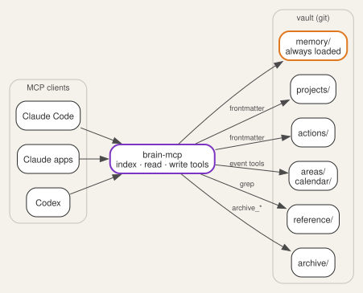

Every new chat with an AI agent starts empty. You explain the project again, list the open tasks again, and remind it that the school holidays start on Friday. The agent is capable, but it has nowhere to keep anything between conversations.
{kind=link}
This post builds that place: a markdown vault under git, served to the agent by a small MCP (Model Context Protocol) server. Claude Code, the Claude apps and Codex all connect to the same vault. Memory, tasks and dates carry over from one conversation to the next, and from one client to another. It is part 1 of 3: part 2 turns the vault into a daily brief on a reMarkable tablet, and part 3 reads handwriting on that brief back into the vault. Each part links its own repository. The MCP server built here is at github.com/morganp/secondbrain-mcp.
What an agent should remember
The vault holds five kinds of knowledge, and each has its own folder:
| Folder | Holds | Loaded |
|---|---|---|
memory/ |
A short brief about you: names, paths, preferences | Every session |
projects/ |
Active work, each with a next_action |
Summary line on request |
actions/ |
Single tasks and ideas | Summary line on request |
areas/ |
Ongoing duties and long-term goals, plus the calendar | Summary line on request |
reference/ |
Lookup knowledge: specs, notes, how-tos | Matching lines only |

The layout follows PARA (Projects, Areas,
Resources, Archive), with one addition.
memory/ sits outside PARA because it describes the owner rather than any piece
of work. One question sorts a new note: facts about you that every session needs
go to memory, ongoing duties go to areas, and lookup knowledge goes to reference.
Importance plays no part in the choice.
The rule that keeps the context small is progressive disclosure. A session
starts by reading memory/INDEX.md and a one-line summary of each project.
The agent opens a full file only when the conversation needs it, and it searches
reference material with grep rather than reading it whole.
One markdown file per item
Each project, action and area is one markdown file. The frontmatter at the top of the file is the index, so there is no separate index file to keep in step. An action looks like this:
---
id: service-the-lawnmower
stage: next
tags: [home, garden]
due: 2026-10-04
created: 2026-09-25
---
# Service the lawnmower
Blade sharpening and an oil change before it goes away for winter.
The vault is a git repository. Every write through the server commits and pushes the changed file. The history records each change the agent makes, and a second machine holds a copy. A systemd timer also commits anything left behind every 10 minutes.
An action list the agent manages
Actions follow the GTD (Getting Things Done) stages. next is committed work,
soon is committed but not urgent, waiting is blocked on someone else, and
sometime holds ideas with no commitment. The first tag is always the area of
life: work, home or personal. Later tags are free topics.
The file never stores a priority. The daily brief derives one from stage and
due each time it reads the action, so the priority cannot go stale as the
dates pass. The rules apply in order, and the first match wins:
| Rule | Condition | Shown as |
|---|---|---|
| 1 | Stage is waiting |
waiting |
| 2 | Due date has passed | overdue |
| 3 | Due today | today |
| 4 | Stage is next |
next |
| 5 | Due within 7 days | next |
| 6 | Stage is sometime |
sometime |
| 7 | Anything else | soon |
Rule 4 makes the stage a commitment: a next action stays at next whatever
its date, and an undated one has no date to limit it. Rule 5 works the other
way, pulling a soon or sometime action forward as its due date approaches.
A blocked task stays waiting even when overdue, because nothing on your side
can move it.
Page 1 of the brief shows overdue, today and next: the work you can act
on today. waiting, soon and sometime follow on page 2.
Two flows complete the list. Capture writes a new file from
actions/_template.md. Completion calls archive_action, which stamps the
file with an archived: date and moves it under archive/actions/. The list
and search tools skip archive/ by default, so finished work never fills a
search result.
Events and annual dates
The calendar lives in areas/calendar/ as three markdown tables:
events.mdholds one-off events, keyed byYYYY-MM-DD, with an optional end date for ranges.recurring_events.mdholds annual events, keyed byMM-DD: birthdays, anniversaries and fixed holidays.archived_events.mdholds past one-off events.
The date format decides the file. add_event with 2026-10-17 inserts a
one-off row, and add_event with 10-17 inserts an annual row. The server
inserts each row in date order, so the agent never reads the table first.
list_events returns a window, today plus 7 days by default. It expands each
annual row into the window, including across a year end. A quarterly reminder
becomes four annual rows. Holidays that move each year, such as Easter, go in
as one-off rows.
The server can also merge Google Calendar into the same list. The adapter is
read-only, uses the calendar.readonly scope, and takes all-day events from
shared calendars and timed meetings from your own. When the two sources hold
the same event, the vault row wins. If Google fails, list_events returns the
vault events with a warning line rather than an error. Publish the Google Cloud
consent screen to Production: in Testing mode Google expires refresh tokens
after 7 days.
The tool set
The server exposes the vault as 19 tools in three tiers of cost:
| Tier | Tools | Returns |
|---|---|---|
| Index | list_projects, list_actions, list_areas, list_events, list |
One line per item, from frontmatter |
| Read | read_text, grep, get_skill, get_daily_stoic |
One file, or matching lines |
| Write | write_text, append, edit, delete, add_event, add_term, archive_project, archive_action, archive_area, archive_events |
A status line, after commit and push |
Each tool schema costs context in every session, so the set stays small and each
tool does one job. list_actions shows the shape of an index tool. It reads
only frontmatter, filters, and sorts undated actions last:
const fm = parseFrontmatter(await fs.readFile(file, "utf8"));
if (!fm.id) continue;
if (stage && fm.stage !== stage) continue;
if (domain && !tags.includes(domain)) continue;
if (due_before && (!fm.due || fm.due > due_before)) continue;
rows.push({
due: fm.due || "~", // "~" sorts after any ISO date, so undated lands last
line: `${fm.id} | ${fm.stage || "?"} | due ${fm.due || "-"} | tags ${fm.tags || "-"} | ${rel}`,
});
Every path passes through resolveInRoot(), which refuses anything outside the
vault root.
Teaching the agent the rules
The tools give the agent access. A CLAUDE.md at the vault root tells it how
to behave:
- Start each session with
list_projectsandmemory/INDEX.md, and nothing else. - Open one file at a time with
read_text, and search reference material withgrep. - Capture a new task as an action file from the template, with the area tag first.
- Archive finished items with the archive tools, never by moving files.
- Never read or edit the calendar files directly: the event tools do the date arithmetic.
The same rules sit in README.md for clients that do not read CLAUDE.md.
Longer procedures live in a separate skills repository, and get_skill fetches
one on demand. A close skill ends a session by writing its decisions, new
tasks and project progress back into the right notes.
Deploying it
The server is a single Node.js file that speaks MCP over standard input and output. The deployment runs it in a Proxmox container:
- Clone the vault and the server, and copy
mcp/.env.exampletomcp/.env. - Set
BRAIN_ROOTto the vault path, and add the Google values if you want the calendar merge. - Install the systemd unit from
deploy/vault-mcp.service, which runs the server behind supergateway on port 3002. - Put nginx in front to check the bearer token, with the OAuth server handling sign-in.
- Expose nginx through a Cloudflare tunnel.
- Connect each client to the public
/mcpURL.
Run supergateway in stateless mode, and start the server through exec so
supergateway can stop each child process after its request:
ExecStart=/usr/bin/supergateway --stdio 'exec node /opt/brain/mcp/server.js' --port 3002 --outputTransport streamableHttp
Connect Claude Code with one command:
claude mcp add --transport http secondbrain https://brain.example.com/mcp
Two earlier posts cover the details. Building a personal MCP server walks through the tunnel, the systemd unit and the git credentials, and MCP server OAuth authentication covers the sign-in flow. Part 2 uses this vault as the data source for a daily brief on the reMarkable.